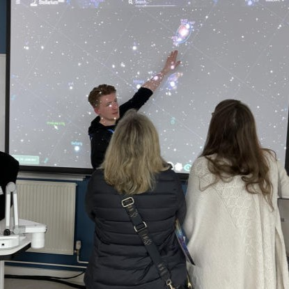

About me
I am a Foundation Scientist in the SWAS team in SSA at the Met Office having joined in November 2024. Currently, I am working on the assimilation of GNSS-RO data as well as using the Desroziers method to diagnose the error statistics on observation, background and analysis errors to improve the data assimilation system here at the Met Office.
I have worked for the Met Office for as of today.
Timeline
- 09/2025 - Present: Working on a Discord bot in my personal time with my best friend allowing users to access forecast data on their own servers.
- 07/2025 - Present: Became an Online Work Experience Ambassador for Education Outreach
- 04/2025 - Present: Volunteering for the Exeter Science Centre
- 11/2024 - Present: Started working at the Met Office
- 10/2017 - 11/2024: Worked at Morrisons alongside my studies
- 09/2023 - 09/2024: Completed MSc Astrophysics at Cardiff University [Merit]
- Investigating the likelihood of habitable exomoons orbiting gas giant planets (dissertation)
- Determining the significance of galactic inclination when fitting Sersic Profiles
- Constructing models of galaxies with differing masses, assuming a constant star formation rate
- 09/2021 - 06/2023: Completed BSc Astrophysics at the University of Hertfordshire [2:1 Hons.]
- Hunting for supernovae in local galaxies (final year project)
- M-dwarfs and the Trappist-1 system
- Measuring the proper motion of an asteriod and calculating orbital properties
- Hunting for brown dwarf companions
Background information
Work Notes for GNSS-RO
- GNSS RO basics - ECMWF/EUMETSAT Satellite training course [Lonitz, K. 2023]
- GNSS RO is an active remote sensing technique that uses radio transmissions from GNSS satellites to retrieve certain properties.
- These consist of temperature, pressure and water vapour content in the stratosphere and electron density in the ionosphere due to the refractivity of the signal passing through the Earth's atmosphere to a receiving LEO polar satellite.
- There are around 12,000 observations per day.
- These observations are assimilated as initial conditions into a numerical weather prediction (NWP) models to improve forecasts.
- GNSS-RO data is used in the Met Office's NWP model, the Unified Model (UM).
- GNSS-RO data is also used in other centres across the world, including ECMWF's model.
- ROM SAF is a processing centre under EUMETSAT and deals with RO data coming from Metop, Sentinel-6 and Metop-SG satellites and other missions.
- ROMEX is the modelling experiment that deals with these 30,000-40,000 RO observations per day within 3 months in 2022. The aim is to explore the impact of RO obbservations on a NWP model.
Abbreviations
- ECMWF - European Centre for Medium-Range Weather Forecasts
- EUMETSAT - European Organisation for the Exploitation of Meteorological Satellites
- GES - Global Evaluation Suite
- Metop/Metop-SG - Meteorological Operational Satellite/ Meteorlogical Operational Satellite-Second Generation (EUMETSAT)
- NWP - Numerical Weather Prediction
- RO - Radio Occultation
- ROMEX - Radio Occultation Modelling EXperiment
- ROM SAF - Radio Occultation Meteorology Satellite Application Facility
- SSA - Satellite and Suface Assimilation
- SWAS - Satellite Winds and Active Sensing
Contact me
Email Me: liam.hall@metoffice.gov.uk
Internal phone: 03301 352314
Location: Exeter HQ - Floorplate C2